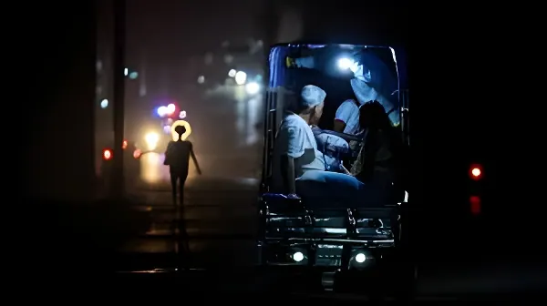

Depuis l'automne 2024, Cuba connaît des pannes d'électricité de seize à vingt heures par jour sur l'ensemble du territoire. Derrière les blackouts, c'est l'ensemble du modèle économique et politique cubain qui vacille sous la triple pression d'un embargo renforcé, de la fin du soutien vénézuélien et d'une économie planifiée à bout de souffle.
À l'automne 2024, Cuba entre dans l'une des crises énergétiques les plus sévères de son histoire depuis la période spéciale des années 1990. Le réseau électrique national, vieux de plusieurs décennies et fonctionnant majoritairement au fioul importé, s'effondre progressivement. Les centrales thermoélectriques tombent en panne en cascade, faute de carburant, de pièces détachées et de maintenance.
Les coupures de courant (apagones) atteignent seize à vingt heures par jour dans la capitale La Havane, et jusqu'à vingt-deux heures dans les provinces orientales. Les hôpitaux fonctionnent au groupe électrogène, les denrées alimentaires se périssent faute de chaîne du froid, les pompes à eau tombent en panne — privant les foyers d'eau courante simultanément à l'électricité. Le système de transport urbain s'arrête. À l'école, les cours sont suspendus.
La crise énergétique cubaine n'est pas conjoncturelle — elle est le produit de plusieurs décennies de sous-investissement et de dépendances géopolitiques. Premièrement, le pétrole vénézuélien, qui alimentait Cuba à hauteur de 50 000 barils par jour dans les années 2000 en échange de médecins et de conseillers militaires, a progressivement tari avec l'effondrement de la production vénézuélienne. Les livraisons sont passées à moins de 20 000 barils en 2023, puis à moins de 10 000 en 2024.
Deuxièmement, les sanctions américaines renforcées sous l'administration Trump (2025) ont exclu Cuba de la liste des pays autorisant les transferts de fonds depuis les États-Unis, tarissant les remesas (envois d'argent de la diaspora) qui représentaient l'une des premières sources de devises de l'île. Troisièmement, l'économie planifiée cubaine, sans réforme structurelle profonde depuis le tournant timide des années 2010, est incapable de mobiliser les investissements privés nécessaires à la modernisation du réseau.
Manifestations du 11-J : les plus importantes depuis 1994. Des dizaines de milliers de Cubains descendent dans les rues pour crier « ¡Se acabó! » Répression sévère : plus de 1 300 arrestations.
Vague migratoire sans précédent : plus de 500 000 Cubains franchissent la frontière mexicano-américaine entre 2022 et 2024, le plus grand exode depuis la révolution.
Effondrement total du réseau électrique national. Blackouts de 20h/jour. Manifestations spontanées dans plusieurs provinces. Le gouvernement décrète un état d'urgence énergétique.
L'ouragan Oscar frappe l'est de Cuba, aggravant la crise humanitaire déjà critique dans les provinces orientales déjà les plus touchées par les coupures.
Retour de Trump à la Maison-Blanche. Renforcement des sanctions : Cuba replacée sur la liste des États sponsors du terrorisme. Les envois de fonds depuis les USA sont à nouveau bloqués.
La situation se stabilise à un niveau très bas. Les pannes persistent (8 à 12h/jour en moyenne). Cuba négocie avec la Russie et l'Algérie des livraisons de pétrole à crédit. La population continue d'émigrer massivement.
La crise énergétique s'inscrit dans un contexte économique catastrophique. Depuis 2020, Cuba a connu une inflation cumulée estimée à plus de 500 %, alimentée par la réforme monétaire de 2021 (unification des deux pesos, officiel et convertible) qui a de facto multiplié par 24 les prix officiels de nombreux produits. Le salaire moyen, de l'ordre de 4 000 pesos cubains, permet à peine d'acheter quelques kilogrammes de nourriture au marché libre.
| Indicateur | 2019 (pré-crise) | 2025–2026 |
|---|---|---|
| Inflation annuelle | ~5 % | > 100 % |
| PIB (croissance) | +0,5 % | –2 à –4 % |
| Remesas (Mds USD) | ~3,7 | ~1–1,5 |
| Tourisme (visiteurs) | 4,3 millions | ~1,5 million |
| Heures de coupure/j | 0–2h | 8–20h |
La conséquence démographique la plus frappante de la crise est l'ampleur de l'émigration. Cuba, qui comptait environ 11,2 millions d'habitants en 2020, pourrait avoir perdu plus d'un million de résidents d'ici 2026. La vague migratoire de 2022–2024, la plus importante depuis le Mariel de 1980, a vu des centaines de milliers de Cubains traverser le Nicaragua, puis le Mexique, pour atteindre la frontière américaine via la procédure dite de parole humanitaire.
Ce sont surtout les jeunes, les qualifiés, les médecins et les ingénieurs qui partent — ceux-là mêmes dont le système aurait le plus besoin pour sa reconstruction. Le vieillissement de la population résidante s'accélère, créant un cercle vicieux : moins de main-d'œuvre active, moins de cotisants au système de retraite, moins de capacité productive.
« Nous vivons dans le noir, au sens propre comme au sens figuré. On ne sait plus quand la lumière reviendra — dans une heure, ou dans dix ans. »
— Reinaldo, ingénieur à La Havane, 38 ans, octobre 2024« Je suis parti avec ce que je portais sur moi. Ma famille reste là-bas, sans eau ni électricité. Je leur envoie de l'argent mais l'embargo bloque les transferts. »
— Yanier, infirmier cubain installé à Miami, 2025Le gouvernement cubain de Miguel Díaz-Canel fait face à une équation politique impossible. La légitimité révolutionnaire s'érode avec chaque heure de blackout supplémentaire. Les arrestations qui ont suivi les manifestations de juillet 2021 — dont plusieurs condamnations à des peines supérieures à vingt ans de prison — ont alimenté la colère internationale et renforcé l'isolement de l'île.
Cuba se tourne vers des alliés de plus en plus rares : la Russie fournit du pétrole à crédit, la Chine finance quelques projets d'infrastructure, l'Algérie négocie des échanges bilatéraux. Mais aucun de ces partenariats ne peut remplacer le soutien vénézuélien des années 2000. Le régime résiste, mais son horizon s'est considérablement rétréci.
Cuba traverse une crise existentielle qui touche simultanément son modèle énergétique, économique, démographique et politique. L'île ne peut plus s'appuyer sur les béquilles qui l'ont soutenue depuis la révolution — la rente pétrolière vénézuélienne, la solidarité du bloc soviétique, l'attractivité touristique. Les blackouts ne sont pas seulement une panne technique : ils sont le symptôme visible d'un système à bout de souffle. La question qui se pose désormais n'est plus de savoir si Cuba changera, mais à quelle vitesse et sous quelle forme ce changement adviendra — réforme progressive, implosion, ou transition négociée que beaucoup, dans et hors de l'île, appellent de leurs vœux.
Desde el otoño de 2024, Cuba sufre cortes de electricidad de dieciséis a veinte horas diarias en todo el territorio. Detrás de los apagones, es todo el modelo económico y político cubano el que tambalea bajo la triple presión de un embargo reforzado, el fin del apoyo venezolano y una economía planificada al límite de sus fuerzas.
En el otoño de 2024, Cuba entra en una de las crisis energéticas más severas de su historia desde el Período Especial de los años 1990. La red eléctrica nacional, que tiene varias décadas de antigüedad y funciona principalmente con fuel importado, se derrumba de forma progresiva. Las centrales termoeléctricas fallan en cadena por falta de combustible, piezas de recambio y mantenimiento.
Los cortes de luz (apagones) alcanzan entre dieciséis y veinte horas diarias en la capital La Habana, y hasta veintidós horas en las provincias orientales. Los hospitales funcionan con generadores, los alimentos se echan a perder por falta de cadena de frío y las bombas de agua dejan de funcionar, privando a los hogares de agua corriente al mismo tiempo que de electricidad.
La crisis energética cubana no es coyuntural: es el producto de varias décadas de subinversión y dependencias geopolíticas. En primer lugar, el petróleo venezolano, que abastecía a Cuba con hasta 50 000 barriles diarios en los años 2000 a cambio de médicos y asesores militares, se ha reducido progresivamente con el colapso de la producción venezolana. En segundo lugar, las sanciones estadounidenses reforzadas bajo Trump (2025) han bloqueado de nuevo las remesas desde EE.UU. En tercer lugar, la economía planificada cubana, sin reforma estructural profunda, es incapaz de movilizar las inversiones privadas necesarias.
Manifestaciones del 11-J: las más importantes desde 1994. Miles de cubanos gritan «¡Se acabó!» Represión severa: más de 1 300 detenidos.
Ola migratoria sin precedentes: más de 500 000 cubanos cruzan la frontera mexicano-estadounidense entre 2022 y 2024, el mayor éxodo desde la revolución.
Colapso total de la red eléctrica nacional. Apagones de 20h/día. Manifestaciones espontáneas en varias provincias. El gobierno decreta un estado de emergencia energética.
El huracán Oscar golpea el este de Cuba, agravando la crisis humanitaria ya crítica en las provincias orientales.
Regreso de Trump. Refuerzo de sanciones: Cuba vuelve a la lista de países patrocinadores del terrorismo. Los envíos de dinero desde EE.UU. son bloqueados nuevamente.
La situación se estabiliza en un nivel muy bajo. Los apagones persisten (8 a 12h/día de media). Cuba negocia con Rusia y Argelia entregas de petróleo a crédito.
La crisis energética se inscribe en un contexto económico catastrófico. Desde 2020, Cuba ha sufrido una inflación acumulada estimada en más del 500 %, alimentada por la reforma monetaria de 2021 que multiplicó por 24 los precios oficiales de muchos productos. El salario medio apenas permite comprar unos pocos kilogramos de alimentos en el mercado libre.
| Indicador | 2019 (pre-crisis) | 2025–2026 |
|---|---|---|
| Inflación anual | ~5 % | > 100 % |
| PIB (crecimiento) | +0,5 % | –2 a –4 % |
| Remesas (Mds USD) | ~3,7 | ~1–1,5 |
| Turismo (visitantes) | 4,3 millones | ~1,5 millones |
| Horas de corte/día | 0–2h | 8–20h |
La consecuencia demográfica más llamativa de la crisis es la magnitud de la emigración. Cuba, que contaba con unos 11,2 millones de habitantes en 2020, podría haber perdido más de un millón de residentes para 2026. Son sobre todo los jóvenes, los cualificados, los médicos y los ingenieros los que se van — precisamente quienes el sistema más necesitaría para su reconstrucción.
« Vivimos en la oscuridad, en el sentido literal y en el figurado. Ya no sabemos cuándo volverá la luz — en una hora o en diez años. »
— Reinaldo, ingeniero en La Habana, 38 años, octubre de 2024« Me fui con lo que llevaba puesto. Mi familia sigue allí, sin agua ni luz. Les mando dinero pero el embargo bloquea las transferencias. »
— Yanier, enfermero cubano instalado en Miami, 2025El gobierno cubano de Miguel Díaz-Canel se enfrenta a una ecuación política imposible. La legitimidad revolucionaria se erosiona con cada hora adicional de apagón. Las detenciones tras el 11-J —con condenas superiores a veinte años de prisión— han alimentado la ira internacional y reforzado el aislamiento de la isla. Cuba se vuelve hacia aliados cada vez más escasos: Rusia, China, Argelia. Pero ninguna de estas asociaciones puede reemplazar el apoyo venezolano de los años 2000.
Cuba atraviesa una crisis existencial que afecta simultáneamente a su modelo energético, económico, demográfico y político. La isla ya no puede apoyarse en los pilares que la sostuvieron desde la revolución — la renta petrolera venezolana, la solidaridad del bloque soviético, el atractivo turístico. Los apagones no son solo un fallo técnico: son el síntoma visible de un sistema agotado. La pregunta que se plantea ya no es si Cuba cambiará, sino a qué velocidad y bajo qué forma se producirá ese cambio — reforma progresiva, implosión, o transición negociada que muchos, dentro y fuera de la isla, están esperando.